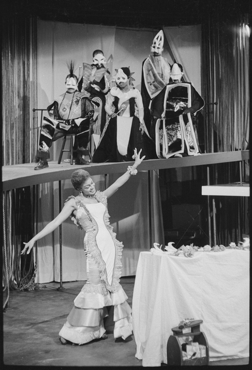
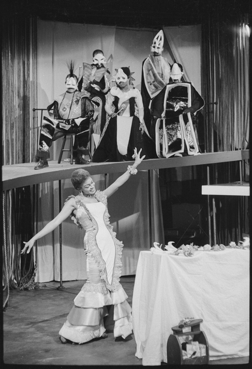
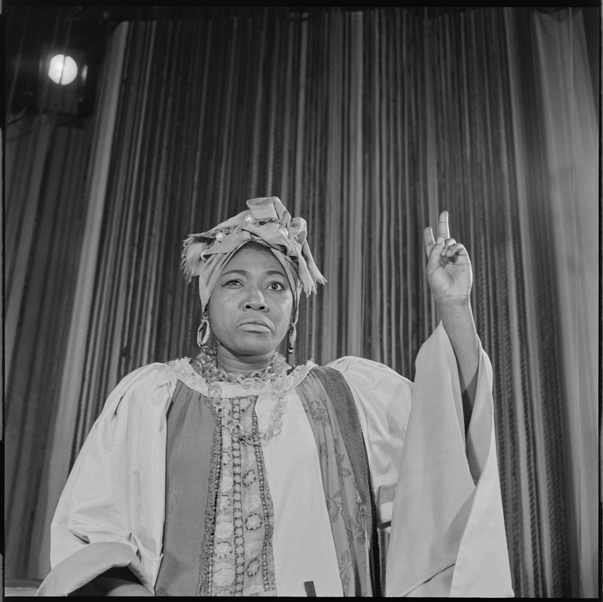
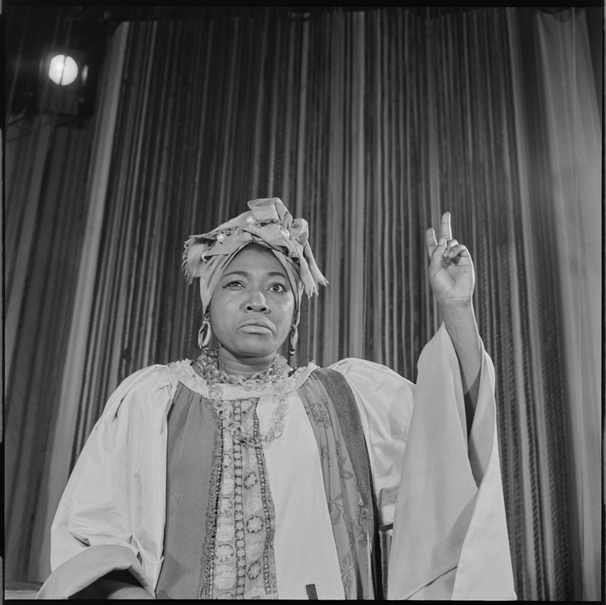
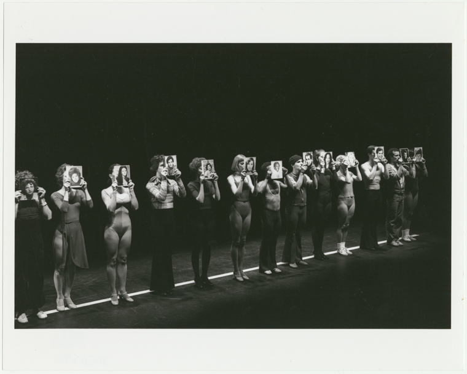
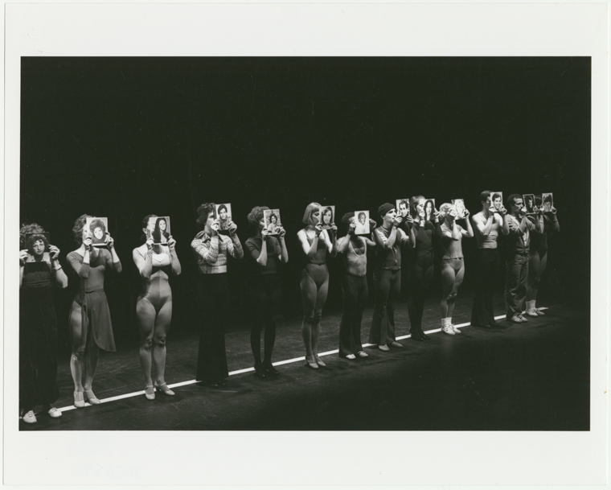
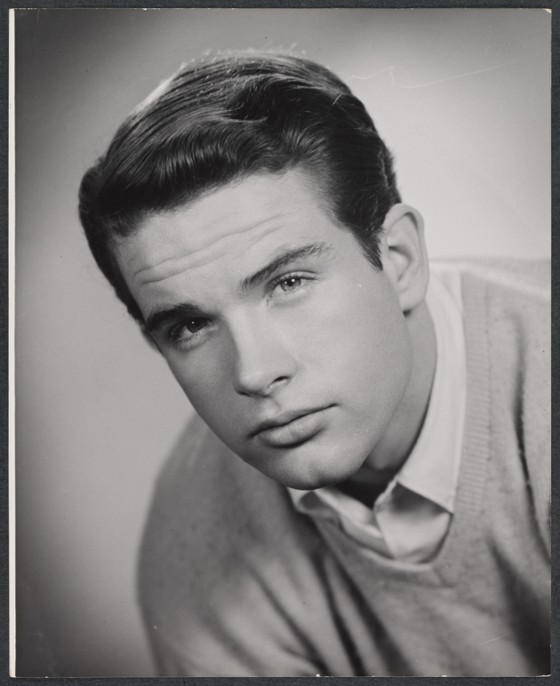
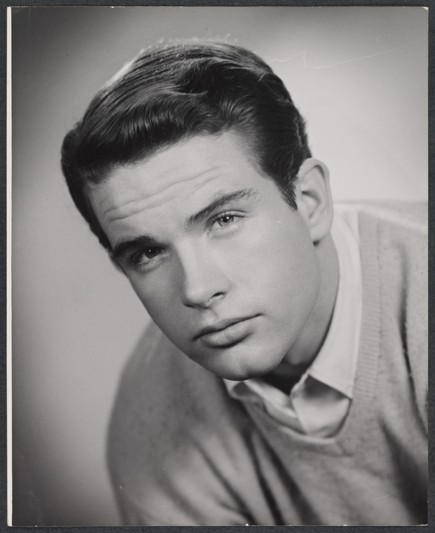

Billy Rose
The Billy Rose Theatre Collection's photograph archive holds personalities, productions, theatre buildings, and production studios. This digital presentation offers the complete contents of the so-called "A" files, which are rich in 19th-century carte-de-visite and cabinet card portraits, as well as 20th-century portrait proofs, personal snapshots, and photographic postcards. The series also includes some early production photographs, and a section on theatres subdivided geographically.
Martha Swope
The collection consists of over 1,520,000 images, black and white and color, on contact sheets with corresponding negatives (mostly 35 mm and 120), transparencies, slides, and prints taken by Martha Swope from circa 1955-2002 (bulk dates 1957-1994). There are also some programs and clippings filed with the images, often illustrating where the image was published or used. It documents Swope's career photographing theater productions, dance companies, opera productions, music groups, circus, film, television, individual performers, and performing arts-related personalities.
Friedman-Abeles
The collection contains work from the partnership of Leo and Sy Friedman and Joseph Abeles, together the pre-eminent firm documenting Broadway theater productions in the 1950s-1970s. The Friedman-Abeles Photographs consist primarily of photographs, negatives, contact sheets, proofs, slides, and oversized prints, spanning the partnership of Leo and Sy Friedman and Joseph Abeles. While the partnership lasted from 1954-1970, the collection does contain photographs from beyond this timeline.


 



 



 



 
